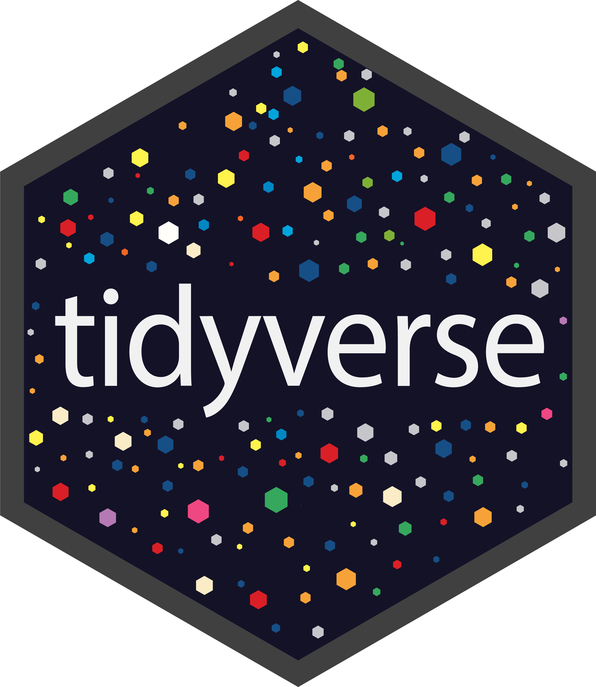

From Base R to the Tidyverse#
By ‘base R’ I mean the basic functionality you get when you install R. That is already a powerful set of tools, and everything we have covered so far has been using base R. However, it is possible to enhance R’s capabilities by installing packages.
Packages are essentially a set of functions written by (ususally) expert users of R, that perform certain tasks more efficiently than you could do them in base R. Once these bespoke functions have been debugged and are ready for use, they are packaged up and placed on server ready for you to install and use.
There are thousands of such packages covering very common tasks to very niche ones. They can be incredibly useful. Installing a package dedicated to processing files produced by eye-tracking equipment has saved me many days, if not weeks, of work in the past.
This week we will use the tidyverse: a collection of R packages designed to work together for data science. These packages provide consistent tools for common parts of a data-analysis workflow, including importing data, reshaping and cleaning it, transforming and summarising variables, and creating visualisations. For many tasks, their shared conventions can make code easier to read and write. The tidyverse is widely used in teaching, research, and industry, so you are likely to encounter it in academic and professional R work.
So why did we not just learn tidyverse from the start? There are several reasons, but R is the language the tidyverse is (mostly) written in. All you have learned about objects, types and logic still holds, and if you want to understand the errors you will inevitably encounter when using tidyverse packages, you will need a grasp of the underlying base R.
Another important consideration is reproducibility. Code written using base R is often highly portable because it relies only on functions included with R itself. This can make it easier for other researchers to download the data and script and rerun an analysis at no cost.
Analyses that depend on additional packages can still be fully reproducible, but they require more care. Packages may change over time, be archived, or require particular versions of R or other packages.
Tidyverse#


The tidyverse is the name for a collection of many related packages, but we will focus on three of them, over the following sections: tidyr, dplyr, and ggplot2.
The tidyr package we will use primarily to reshape data from wide to long. The dplyr package we will use for summarising data, adding new variables, filtering rows and selecting columns. Finally the ggplot2 package is used for data visualisation.
dplyr and ggplot2 work best with data tidy data, while the tidyr package helps us get the data in a tidy format. By tidy, I mean that we want one variable per column and one row per observation. This generally means, as we have seen previously, that the data should be in long (rather than wide) format. This distinction is not always intuitive, so I will go over it one more time here.
Suppose my data has a blood pressure reading for several people over 10 weeks. In Excel we would likely have a row for each person and column for each week. But now our time (or week) variable is spread over 10 different columns headers making it much harder (though not impossible) to work with in R. And our blood pressure data exists in 10 separate columns, when it is in fact one variable.
Although the long format (one column for week number and one column for blood pressure) results in a much longer grid of data, and is perhaps not as intuitive to look at, it is much more efficient to work with in R and will make your code much easier to write.
Again, most tidyverse packages expect your data to be tidy, and the tidyr package helps you tidy it up.
Installing and loading packages#
The first time you use a package you will probably have to install it, which means downloading it from the server and installing it on your machine. This is easier than it sounds. The code install.packages("tidyr") does all that for you.
Important
You do not need to install any packages, because the projects we have set up for you on posit already have them installed. If you are using R on your own machine and not in the Posit cloud system, you will need to install the packages.
Installation of a package is a one-off process. You do it once and once only. That package is then available for all future R sessions. However, within a given R session, you will need to load the package before you can access its functions. This is again very easy, all you need is library(tidyr). Replacing tidyr with the name of the package you want to load.
It’s generally a good idea to load all the packages you are going to use as the first thing you do in a script. Unlike installing, loading needs to be done every time you restart R.
Once the package is loaded using the library() command, you have access to all the functions that come with that package, and you can use them in the same way you would any other function.